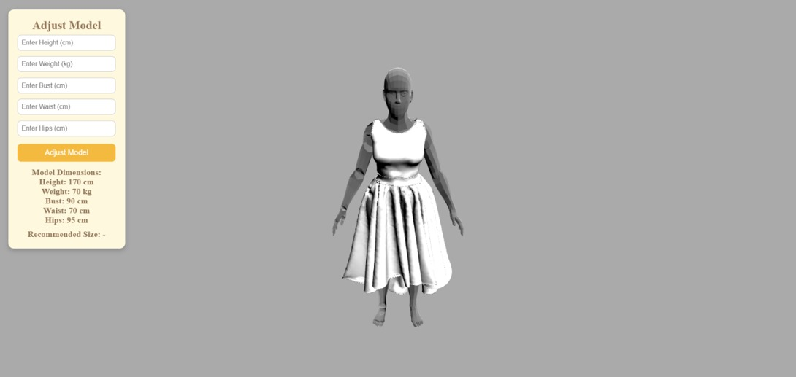
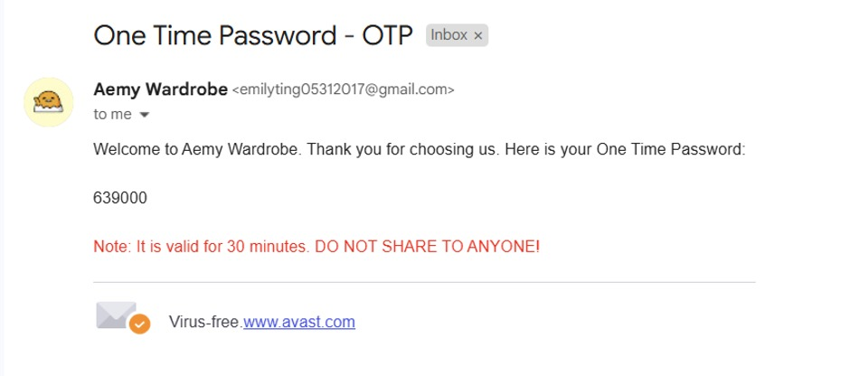
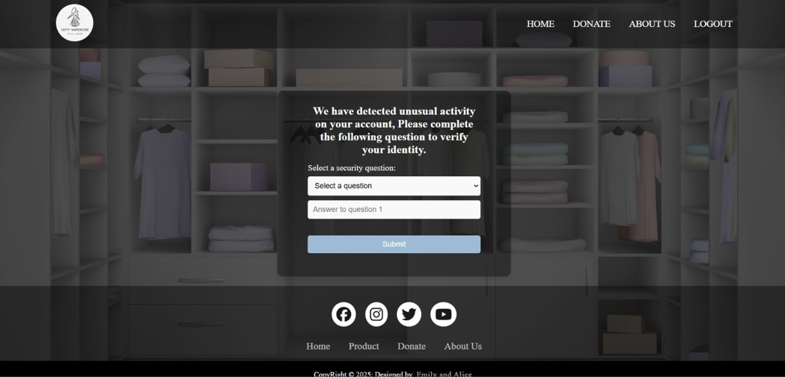
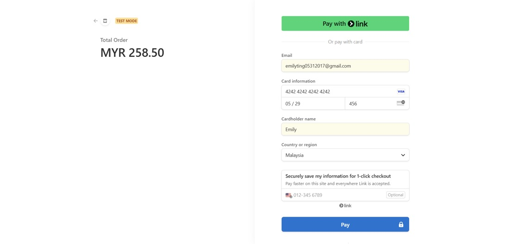

An online clothing experience that brings virtual try-on, thoughtful account verification, and personalized discovery into one shopping journey.
PROJECT3D modeling e-commerce website
FOCUSVirtual try-on & online shopping
FEATURES3D model · Verification · Stripe

01 — THE VIRTUAL FITProduct detail experience
01 / The product experience
See the fit from every angle.
This is the 3D modeling experience on the product detail page. Users enter their height, weight, bust, waist, and hip measurements, and the system generates a 3D body model based on those dimensions.
The model can be rotated through 360 degrees, zoomed in or out, and moved around, helping shoppers explore how an outfit looks from different perspectives before deciding what to buy.
A more personal view of online clothing.
Measurement-based 3D model and garment preview
02 / Account protection
An extra check when it matters.
Two verification steps help confirm the account holder during sign-in: a time-limited email code and an additional security question when activity is flagged as unusual.

One-time password sent by email
A · EMAIL OTP
A code with a time limit.
After the user reaches the OTP step, the system emails a randomly generated six-digit code. The code is stored in the database with a 30-minute expiry. The system checks the submitted code against the stored value and rejects it once it has expired, so an expired OTP cannot be reused.

Security question for unusual activity
B · UNUSUAL ACTIVITY
Verify a new sign-in.
If the captured IP address differs from the one recorded at registration, the user is asked to answer their previously established security question. A correct answer is required to continue to the homepage. If no question was set up during registration, the flow directs the user to the security-question step.
Together, these checks add extra verification to the sign-in flow; they complement rather than replace broader account security practices.

Stripe checkout with order total and payment details
03 / Checkout
A clear, familiar way to pay.
The payment page shows the total amount due and collects the card details, cardholder name, and email needed for checkout. Stripe handles the payment flow, and after a successful payment an invoice is sent to the email address provided.
Stripe-powered payment and invoice flow.
04 / Product discovery
A little more to love.
Personalized recommendations appear in the page header above the product details. By surfacing similar or complementary clothing, the feature helps users discover more options without interrupting their shopping flow.
Relevant suggestions, right where shoppers need them.